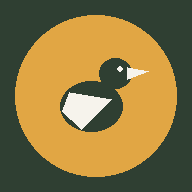

¿A dónde vas hoy?
Elige la herramienta que necesitas. Las dos funcionan en el celular, sin internet, y guardan la información en el mismo dispositivo donde las usas.

Avistamiento de Aves
Monitoreo de fauna
Registra los avistamientos durante el monitoreo: especie, lugar, individuos, estratificación, comportamiento y el punto GPS donde se vio el ave, con historial, curva de acumulación de especies y exportación a CSV o GeoJSON.
1040 especies de Caquetá
Historial + CSV
Entrar →
Monitoreo de Siembra
Insumos, gastos y rendimientos
Controla por lote y núcleo los insumos consumidos, los jornales y el rendimiento de cada actividad, con inventario de bodegas y traslados.
Lotes y núcleos
Bodegas e inventario
Entrar →
Antes de empezar
- Son demos: sirven para probarlas y proponer ajustes. No están conectadas a ningún servidor.
- Los datos se guardan en este dispositivo, en este navegador. No se sincronizan entre celulares ni con el PC.
- Para pasar datos a otro equipo, usa Exportar / Importar respaldo (JSON) dentro de cada app.
- Puedes instalarlas: en Android, menú ⋮ → Añadir a pantalla de inicio; en iPhone, con Safari, Compartir → Añadir a pantalla de inicio.
Preparando el uso sin internet…